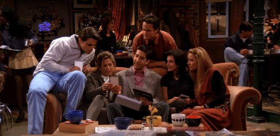
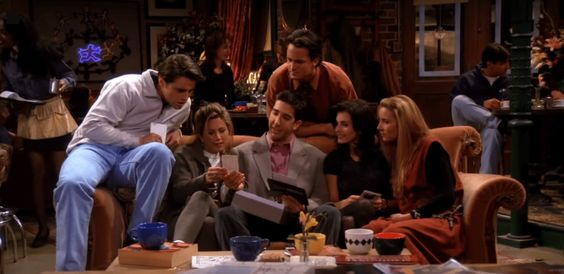
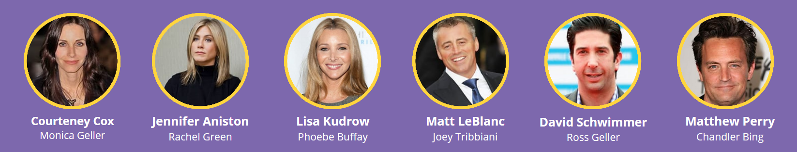

Friends é uma sitcom criada por David Crane e Marta Kauffman, produzida por Bright/Kauffman/Crane Productions em associação com a Warner Bros Television e apresentada entre 22 de setembro de 1994 e 6 de maio de 2004, com um total de 236 episódios.
10 temporadas | Comédia | Nacionalidade EUA
| ONDE ASSISTIR
MAX
Por assinatura | Assistir
| SINOPSE
Seis jovens são unidos por laços familiares, românticos e, principalmente, de amizade, enquanto tentam vingar em Nova York. Rachel é a garota mimada que deixa o noivo no altar para viver com a amiga dos tempos de escola Mônica, sistemática e apaixonada pela culinária. Mônica é irmã de Ross, um paleontólogo que é abandonado pela esposa, que descobriu ser lésbica. Do outro lado do corredor do apartamento de Mônica e Rachel, moram Joey, um ator frustrado, e Chandler, de profissão misteriosa. A turma é completa pela exótica Phoebe.
 

| ELENCO PRINCIPAL

| FRIENDS: THE REUNION
No episódio especial Friends: The Reunion, criado por David Crane e Marta Kauffman, acompanhamos os bastidores de uma das maiores sitcoms de todos os tempos. Assistimos uma reunião de Rachel, Ross, Joey, Mônica, Chandler, Phoebe e outros personagens, através de entrevistas, relembrando episódios clássicos, revisitando os estúdios de filmagens e contando histórias dos bastidores das cenas até então desconhecidas da série que marcou diversas gerações. A produção também conta com a presença de convidados especiais, como Lady Gaga, Cara Delevingne, Reese Witherspoon, Cindy Crawford e outros.
2021 | Comédia | Nacionalidade EUA
.png)
.png)
.png)